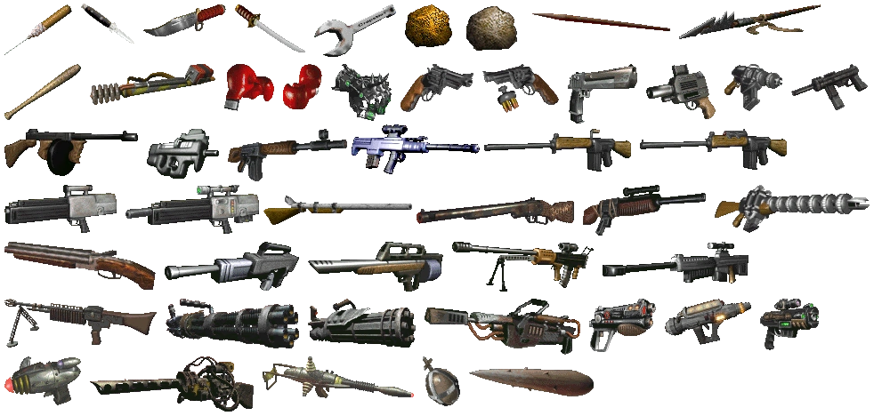
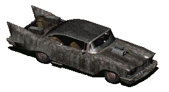
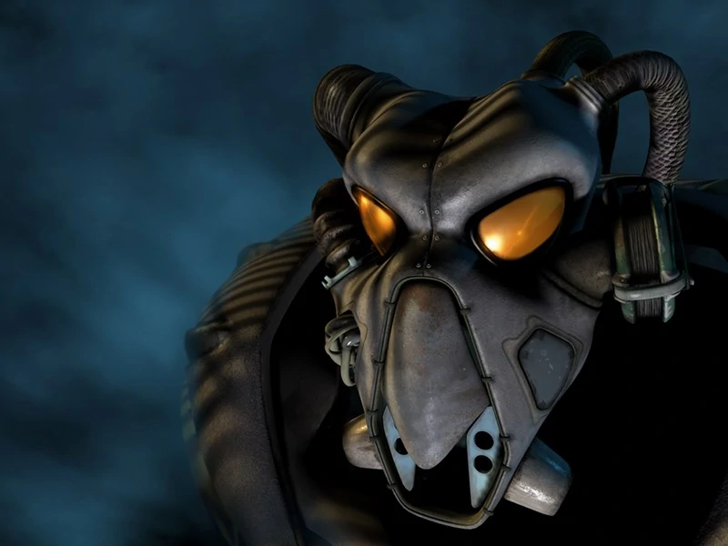
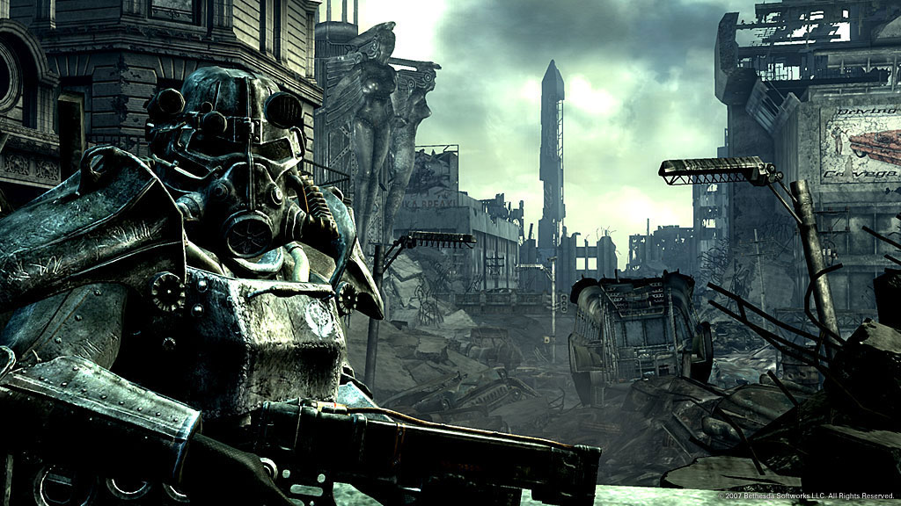

Following the immediate success of Fallout, Interplay set about developing a sequel to be released one year later, built on the same (but improved) engine. Fallout 2's design ethos was the same as Fallout's, just more; more locations, more weapons, more characters and more quests. It gave much-needed improvements to areas lacking in the first game, such as axing the time limit and improving companion AI.

These improvements came at a cost however, due to the short turn-around time the team at Black Isle Studios was put under excessive crunch. Many team members left to the point where none of the team that started work on the first Fallout were working on the second, and the rushed release left a record amount of bugs in the game. Despite this, it was still well-received by fans of the series.
There are many mechanical changes to Fallout 2, such as:

This made the game, despite its bugs, much larger than the original, expanding the role playing and story possibilities greatly and giving the player more options than ever.
The story of Fallout 2 takes place after the original Vault Dweller, now exiled from Vault 13, had traveled far north and founded a small tribal village. 80 years later, the small village of Arroyo is facing an unprecedented drought, and the village leaders select the direct descendant of the Vault Dweller as their Chosen One to find a G.E.C.K.: a powerful device for cultivating agriculture in the wake of the apocalypse.
Armed with a spear and the original canteen and PipBoy of the Vault Dweller, you are sent into the wasteland to track down Vault 13 and the G.E.C.K. inside. New powers have risen in the wastes. Armies and pacts have formed, and there are tales of shadowy figures stealing entire villages in the the night...

While Fallout 2 sold as well as the first game, Interplay did not seem interested in doing anything else with the license. With much of the original team gone, Black Isle Studios worked on other projects as Interplay, loosing more and more money, had a majority stake invested by Titus Interactive. During 2000, after the cancellation of Baldur's Gate III, Black Isle started work on a project codenamed Van Buren A.K.A. Fallout 3.
While development on this new 3D Fallout was swift and exciting, Interplay was sinking further into its 59 million dollar debt and some employees though the collapse was inevitable, many of the leads resigning to found Obsidian Entertainment. With the project leaking memebers to Obsidian and the debt looming over them, the final nail in the coffin was when Titus believed that the PC games market was dead, cancelling Fallout 3 near completion and dissolving Black Isle Studios.
Obsidian floundered for a few more years, creating a pitiful attempt at a Fallout game called Fallout: Brotherhood of Steel that was Fallout in name only. Titus Interactive collapsed and Obsidian was handed an eviction notice, unable to pay rent on their offices. Bethesda Softworks stepped in to buy the Fallout license as Interplay went under, going on to turn the franchise into a first-person action RPG.
